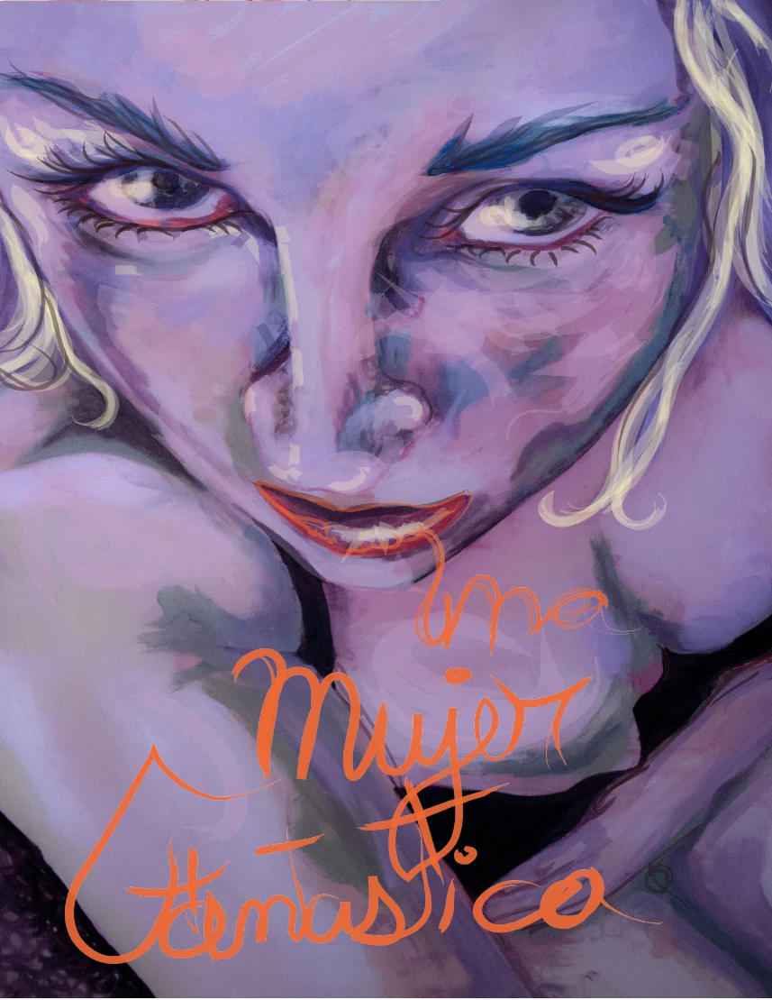
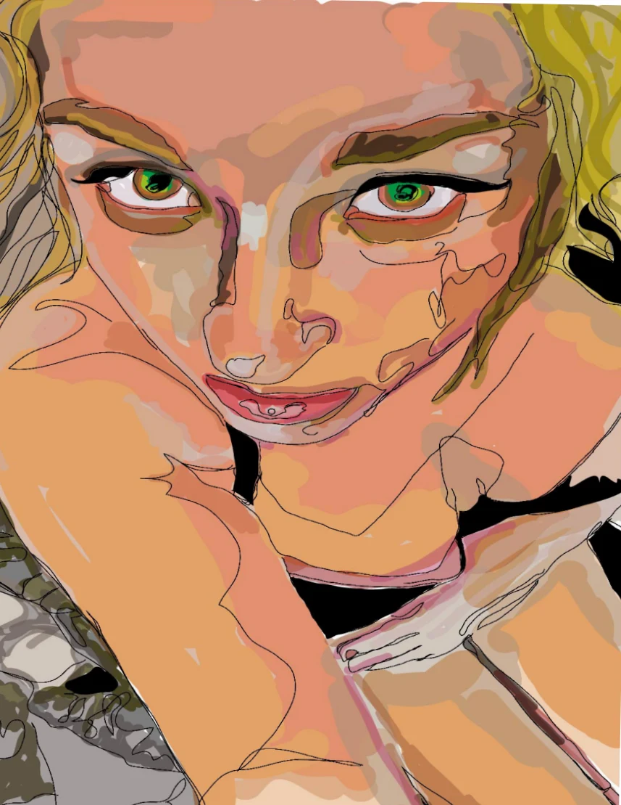
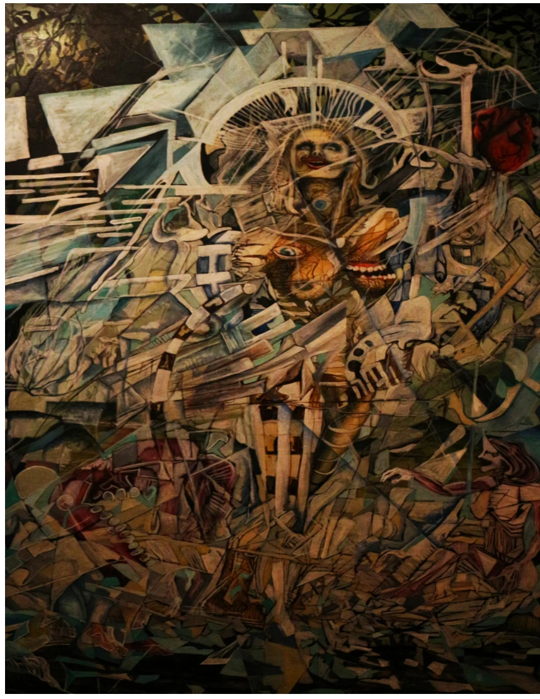

Rastrear los comienzos
Aprendizajes, espacios de encuentro y circulación de imágenes.
EL CUERPO TAMBIÉN
ES UN DOCUMENTO.

Una investigación sobre las historias, los oficios y las identidades que el tatuaje inscribe en Chile.
Entrar en el proyecto01 / MANIFIESTO
Están en la piel. En una fotografía guardada. En la primera máquina. En lo que un maestro enseñó y nadie escribió.
Chile bajo la piel propone reunir memoria oral y visual del tatuaje en Chile desde 1990 hasta la actualidad. Escuchar a quienes han sostenido el oficio y comprender sus vínculos con el cuerpo, la identidad y la vida colectiva.
El libro y el archivo serán el núcleo. La creación gráfica abrirá otra forma de leer esos relatos. Esta web presenta el proyecto y prepara su futura expansión.
02 / CONTEXTO HISTÓRICO
Un periodo para investigar. Muchas memorias por poner en diálogo.
La investigación abordará las transformaciones del tatuaje desde los circuitos underground de los años noventa hasta su presencia contemporánea. Las entrevistas y la revisión de fuentes permitirán contrastar trayectorias, cambios del oficio y experiencias de pertenencia.
Aprendizajes, espacios de encuentro y circulación de imágenes.
Estudios, transmisión de saberes y relaciones entre escenas.
Identidad, memoria y formas contemporáneas de ejercer el oficio.
Estas son preguntas de trabajo; la cronología documental se construirá con fuentes y testimonios.
03 / TERRITORIOS
Tres territorios de investigación para una lectura que reúna experiencias locales sin borrar sus diferencias.
Trayectorias, talleres y redes de aprendizaje en Santiago y la región.
Memorias del oficio y vínculos entre prácticas gráficas y escenas locales.
Relatos, espacios y formas de comunidad para ampliar la mirada territorial.
04 / CINCO EJES
Abre cada eje para conocer las preguntas que orientan el trabajo.
¿Cómo se transforman los significados del tatuaje entre los circuitos underground y su expansión contemporánea? Se contrastarán experiencias de distintas generaciones.
El cuerpo como soporte de biografía, pertenencia y memoria. ¿Qué se elige inscribir y qué sentidos adquiere esa marca con el tiempo?
Formas de aprender, enseñar y trabajar. Herramientas, saberes compartidos y relaciones que sostienen la transmisión del oficio.
Relatos, fotografías y documentos dispersos. ¿Cómo conservarlos con contexto, autoría y condiciones de uso claras?
Del testimonio al libro y de la imagen a la obra gráfica. Cómo construir una lectura que respete la voz de cada participante.
05 / METODOLOGÍA
15–20entrevistas semiestructuradas
contempladas en la propuesta
Selección de trayectorias, generaciones y territorios. Presentación del proyecto y consentimiento antes del registro.
Conversaciones con guion abierto, audio y notas de campo. Material visual asociado cuando exista autorización.
Transcripción asistida, revisión humana, análisis de entrevistas y contraste bibliográfico y documental.
Revisión con participantes antes de consolidar testimonios y materiales para su publicación.
06 / ARCHIVO ORAL Y VISUAL
Cada voz necesita contexto.
Cada imagen, una historia.
Cada documento, una procedencia.
El archivo se organizará por personas, territorios, periodos y temas. Reunirá audios, transcripciones revisadas, fotografías y documentación, conservando sus relaciones y condiciones de uso.
El archivo de investigación aún no está publicado. Las obras que se muestran a continuación pertenecen al trabajo previo de Diego Pazos.
07 / OBRA GRÁFICA
La propuesta contempla retratos con tramas y puntillismo como interpretación visual de la investigación. Estas piezas previas de Diego Pazos muestran el universo gráfico del autor; no son resultados de las entrevistas.

AMPLIAR ↗
AMPLIAR ↗ AMPLIAR ↗
AMPLIAR ↗08 / LIBRO + ARCHIVO
El papel reúne.
El archivo conserva.
La web abre caminos.
La publicación proyectada reunirá investigación, testimonios, imágenes y creación gráfica. El archivo organizado sostendrá la preservación del material y su consulta según las autorizaciones de cada participante.
La web se plantea como expansión: permitirá, en una etapa futura, explorar relaciones entre personas, lugares, periodos y temas. Hoy ofrece una entrada al enfoque, el equipo y la metodología del proyecto.
PUBLICACIÓN Y ARCHIVO EN DESARROLLO09 / EQUIPO
Tatuador, artista visual y gestor. Dirección del proyecto, investigación, entrevistas, producción visual y coordinación general.
Construcción del texto principal, edición y coherencia narrativa para la traducción del material investigativo al libro.
Participación ciudadana y vinculación comunitaria, investigación periodística y apoyo al trabajo territorial.
10 / ESTADO DEL PROYECTO
FONDO DEL PATRIMONIO CULTURAL 2026
El proyecto se vincula a la postulación al Fondo del Patrimonio Cultural 2026. Esta página presenta su propuesta de investigación y creación; no comunica adjudicación ni resultados de ejecución.
El estado administrativo se actualizará cuando exista una confirmación oficial para publicar.